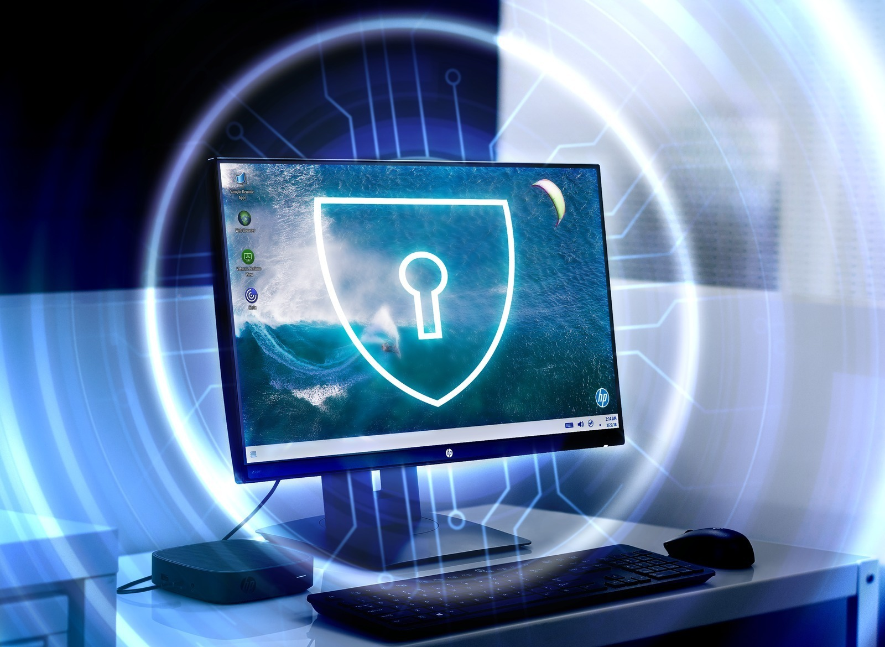

Windows 11 recebe nova atualização obrigatória com correções
Postado 10 de novembro 2021

Neste terça-feira (9), a Microsoft liberou mais um conjunto de atualizações para todas as suas plataformas com suporte oficial. Naturalmente, o Windows 11 se destacou e recebeu uma leva de importantes correções e melhorias no pacote "KB5007215", elevando seu número de compilação para "22000.318".
Leia Mais
Em mais detalhes, o novo pacote de correções resolve os problemas de leitura do Cache L3 em processadores AMD, um fator que prejudicava seu desempenho no Windows 11. Além disso, a novidade também previne que alguns aplicativos nativos — como o Painel de Emojis e Ferramenta de Captura — parem de funcionar inesperadamente devido a certificados expirados, um incômodo menor, mas também notado pelos usuários.
Recapitulando, vale ressaltar que ambas as correções não são exatamente novas, já que estavam disponíveis como Prévias Técnicas no programa Windows Insider. Todavia, era necessário fazer a instalação de maneira manual, caso desejado, sendo um processo um tanto excludente para a maioria do público. Agora, em contraste, o pacote "KB5007215" é obrigatório e chega para todos os usuários automaticamente.
Disponibilidade
O pacote de atualização "KB5007215" pode ser instalado diretamente pelo Windows Update, localizado em sua respectiva seção do aplicativo "Configurações" no Windows 11. Ao acessar essa tela, basta clicar em "Procurar Atualizações" e prosseguir para o processo de instalação, assim que disponível.
Cibersegurança: 6 formas de proteger seus dados
Postado 11 de novembro 2021

A pandemia trouxe o distanciamento social e, com isso, novas possibilidades para o trabalho, justamente pela necessidade do remoto. Afinal, o recomendado é não estar mais no ambiente profissional e, para alguns, é possível dar continuidade em projetos pelo computador pessoal, com o auxílio da internet.
Leia Mais
Assim como as paredes dos lares se transformaram em escritórios, essa mudança também trouxe um ponto de virada para o próprio computador, que antes, normalmente, era utilizado apenas para trabalhos pessoais ou lazer.
onsiderando que os limites entre profissional e pessoal, antes bem definidos, no pós-pandemia — que está chegando, mesmo que a passos lentos — devem estar mais próximos, pode ser um momento de pensar e se preocupar em como garantir sua segurança, e a dos seus dados.
Afinal, com a possibilidade de trabalhar em diversos lugares, usando a conexão de diferentes redes junto a outros computadores, como se proteger de possíveis ataques digitais?
Pensando nisso, listamos algumas dicas para te ajudar a proteger seus dados:
1. Use senhas fortes
Este assunto pode parecer batido, mas muitas pessoas ainda utilizam senhas muito simples, o que é um atrativo para pessoas mal-intencionadas. Por isso, não use a mesma senha para todos os dispositivos e nem sequências simples, como ABCD ou 12345, muito menos sua data de aniversário.
Para evitar ataques cibernéticos, prefira sempre senhas fortes, mais longas e com uma combinação de caracteres especiais, letras maiúsculas e minúsculas, e números. Se possível, altere suas senhas periodicamente e habilite a verificação em duas etapas em todas as contas que dão esse suporte — como o e-mail e WhatsApp, por exemplo.
2. Utilize um gerenciador de senhas
Para ajudar no gerenciamento das suas senhas, alguns softwares podem ser utilizados junto a sensores de digitais. Para isso, os laptops precisam ter um leitor de digitais e algumas marcas, como a HP, oferecem essa tecnologia em seus dispositivos.
Existem diversos gerenciadores de senhas, como 1Password, LastPass, Bitwarden, Dashlane, Keeper, entre outros. Eles ajudam a guardar sua senha de forma segura — inclusive as de cartão de crédito —, gerar senhas fortes automaticamente e alterá-las de forma simples.
3. Cuide ao abrir links e arquivos
Tenha sempre cautela na hora de abrir arquivos e links recebidos de terceiros. Antes de abri-los, verifique se são realmente seguros, mas se não tiver certeza, não abra.
Também é importante se lembrar de não instalar softwares/aplicativos que não estejam disponíveis nas lojas oficiais.
Mais de 350.000 novas variantes de malware são criadas todos os dias, e se você quiser acompanhar, é melhor combater o fogo com fogo. Antivírus tradicionais nem sempre podem reconhecer novos ataques, por isso é bom contar com novas tecnologias e sistemas para aumentar sua segurança:
Sure Sense: defensa inteligente contra ameaças. Esse sistema usa algoritmos de aprendizagem profunda proprietários e tecnologia de rede neural avançada para reconhecer instintivamente qualquer malware e proteger contra ataques nunca vistos.
Sure View: proteja instantaneamente suas informações contra hackers visuais com a tela de privacidade integrada do HP Sure View. Com o toque de um botão, sua tela aparece ilegível para aqueles ao seu redor.
Sure click: proteja seu PC de sites e anexos. O HP Sure Click é uma medida de segurança imposta por hardware que isola o malware em uma máquina virtual para impedi-lo de infectar o sistema.
4. Tenha um equipamento com auto recuperação da BIOS
Ter um notebook com capacidade para se recuperar do zero, reinstalando o sistema operacional em caso de perda total dos dados, é um caminho importante para quem preza pela segurança.
Afinal, ataques de firmware podem destruir completamente seu computador. A HP oferece essa tecnologia em suas séries de computadores, ajudando a recuperar o sistema de entrada e saída, ou somente BIOS, corrompido a partir do bloqueio de boot.
Essa é a primeira e única BIOS autorreparável do mundo. Além disso, o HP Sure Start protege contra ataques LoJax e outros ataques BIOS/UEFI sofisticados.
5. Preze por sua privacidade
Muitas pessoas colam adesivos em suas webcams com medo de estarem sendo observadas. Por isso, ter um computador com câmera de privacidade também dá um alívio para os usuários. Esse tipo de tecnologia informa, por sinal luminoso, quando o dispositivo está ativo e captando imagens.
Outro componente importante pensando na privacidade são as superfícies antirreflexo das telas, garantindo a visibilidade do conteúdo apenas para quem está em frente ao equipamento.
Muitos usuários colocam películas adesivas para adquirirem essa funcionalidade e, pensando nisso, a HP criou a tecnologia Sure View, que já entrega as telas com esse benefício.
6. Compre produtos seguros
Optar por comprar equipamentos confiáveis também é essencial, por isso, sempre decida por marcas preocupadas com a segurança de seus usuários, que elaboram ferramentas nativas mais eficientes.
Além das tecnologias já citadas, a HP também oferece em seus computadores o HP Sure Click, que garante um ambiente seguro intermediário para qualquer arquivo acessado no seu computador por meio de um navegador de internet, impedindo que softwares maliciosos entrem no ambiente do usuário.
A marca também oferece o HP Sure Run, um mecanismo interno que age em conjunto com o sistema operacional para garantir que nenhum software malicioso esteja agindo de maneira desavisada no sistema, por rotinas de verificação que funcionam de forma independente do Windows.
Por fim, as séries 600, 800 e 1000 da HP também contam com o Sure Sense, uma rotina interna no sistema operacional que, através de algoritmos de aprendizado de máquina, se atualiza constantemente para combater ameaças, entendendo o perfil do usuário e os métodos das principais ameaças.
Mesmo que pareçam muitas informações e passos, contar com um produto e com ferramentas que por si só já trazem uma maior sensação de conforto e segurança ao usuário é fundamental. Afinal, a tecnologia é nossa aliada não só para trabalho e diversão, mas também para nos dar segurança.
Twitter monta equipe focada em criptomoedas e descentralização
Postado 11 de novembro 2021

Jack Dorsey, o CEO do Twitter, é conhecido por ser grande fã do universo de criptomoedas e até já revelou que uma das suas empresas está planejando criar uma carteira física para bitcoin. Agora, o Twitter anunciou que também vai contar com uma equipe focada no mundo dos criptoativos.
Leia Mais
A equipe Twitter Crypto, como foi nomeada, é uma divisão de excelência focada em tudo relacionado ao mundo da blockchain. De acordo com informações do Engadget, a equipe será responsável por todo o futuro do Twitter envolvendo criptomoedas.
A líder do time é Tess Rinearson, uma profissional que já trabalhou em startups de criptoativos, como a Interchain, Tendermint e Chain — ela se juntará ao CTO do Twitter, Parag Agrawal, para tomar decisões e definir o futuro da equipe.
“Conforme construo a equipe, estaremos trabalhando para descobrir o que as criptomoedas podem fazer pelo Twitter, bem como o que o Twitter pode fazer pelas criptomoedas", revelou Tess em seu perfil.
Objetivos
A companhia já tem alguns objetivos com a nova equipe, e um deles é entender como as criptomoedas podem ser usadas para pagamentos de criadores de conteúdo. Outra missão é criar uma rede social totalmente descentralizada, o projeto Bluesky — basicamente, a rede social funcionaria independentemente e sem um grande conglomerado por trás, como acontece com o próprio Twitter.
“Há um interesse enorme e crescente entre os criadores de usar aplicativos descentralizados para gerenciar bens virtuais e moedas. Tess se concentrará aqui, com um objetivo de longo prazo de explorar como as ideias da criptografia podem nos ajudar a ultrapassar os limites do que é possível com identidade, comunidade e muito mais”, o Twitter revelou em comunicado.
Em setembro, a companhia anunciou o que os usuários da rede social poderão enviar gorjetas em Bitcoin para os criadores de conteúdo, por meio do Tip Jar.
Caixa vai financiar implantação de energia solar em residências
Postado 11 de novembro 2021

A Caixa Econômica Federal anunciou na segunda-feira (8) o lançamento de uma linha de crédito para pessoas físicas destinada ao financiamento de implantação de energia solar em residências. Chamada de CAIXA Energia Renovável, a linha de financiamento cobre não apenas a compra dos sistemas de geração de energia elétrica fotovoltaica, mas também todos os custos de instalação nas residências.
Leia Mais
A linha de crédito, que deverá chegar em breve às agências do banco, prevê o financiamento de até 100% do projeto (conforme a capacidade financeira do cliente) e taxas a partir de 1,17%. O prazo para pagamento vai até 60 meses, com carência de até seis meses para o vencimento da primeira prestação. O crédito pessoal será oferecido em duas modalidades: sem garantias ou com caução de aplicações financeiras de renda fixa.
De acordo com o comunicado da Caixa, a implantação do sistema de geração de energia elétrica fotovoltaica pode representar uma redução de até 95% na conta de luz. Sem contar que a medida tem reflexos positivos na sustentabilidade e preservação do meio ambiente, com o aumento da geração de energia limpa e renovável.
Unindo proteção ambiental à inclusão socioeconômica
Nesse sentido, o presidente da instituição financeira, Pedro Guimarães, gravou um vídeo na última quarta-feira (3) para ser divulgado na Confederação das Nações Unidas sobre Mudanças Climáticas (COP26). Segundo o executivo, “A proteção do meio ambiente, em especial nos países em desenvolvimento, precisa estar aliada à inclusão social e econômica.
Juntamente com o CAIXA Energia Renovável, o banco público está lançando outras três linhas de crédito ligadas às energias renováveis: a MPE Ecoeficiência, destinada a pessoas jurídicas, e o Programa Sustentabilidade CAIXA para o setor agro, que prevê dois tipos de financiamento.
O primeiro deles, ABC (Agricultura de Baixo Carbono) tem como público-alvo os agricultores, e o Inovagro (Programa de Incentivo à Inovação Tecnológica na Produção Agropecuária do Governo Federal) busca estimular e fomentar a produção agropecuária, através do financiamento de máquinas e equipamentos.
Android 12: Google envia atualização 'por engano' para linha PIxel
Postado 11 de novembro 2021

O Google enviou, por engano, uma nova atualização completa do Android 12 para alguns celulares da linha Pixel nessa quarta-feira (10), levando os proprietários a baixar uma compilação de 1,8 GB. O pacote era praticamente idêntico ao já instalado nos dispositivos anteriormente.
Leia Mais
De acordo com o site ArsTechnica, a atualização aparentemente seria destinada aos assinantes da Verizon, uma das principais operadoras dos Estados Unidos. O update contém um código adicional que facilita o funcionamento do smartphone na rede da prestadora, sendo essa a sua única diferença.
Em circunstâncias normais, bastaria o envio de uma pequena quantidade de códigos referentes à rede da Verizon, resultando em uma compilação de tamanho muito menor à que foi disponibilizada via OTA (over-the-air). O próprio sistema móvel do Google possui uma ferramenta destinada ao envio de códigos alterados, intitulada atualização delta.
Segundo o Android Central, os modelos Pixel 3, 4 e 5 foram afetados, com relatos do problema em vários países. Curiosamente, o Pixel 6 ficou de fora do alerta de atualização lançado pela companhia.
"Ignore a atualização"
Quando o sistema de atualização automática começou a notificar os usuários sobre a chegada de uma nova compilação, com a mesma descrição do pacote original, muitos deles procuraram o Google em seu canal no Reddit. Algum tempo depois, a empresa respondeu às reclamações.
"Lamentamos o alerta que você recebeu. Não se preocupe, resolvemos o problema e você pode desconsiderar a atualização", escreveu a empresa em resposta a um usuário da plataforma. Ou seja, os proprietários que receberam o alerta devem ignorá-lo.
Em contato com o 9to5Google, a companhia informou que a instalação não causa nenhum impacto nos telefones atualizados anteriormente para o Android 12. Ela disse ainda que lançará uma nova compilação em breve, retornando o dispositivo para a configuração de rede correta da sua operadora.